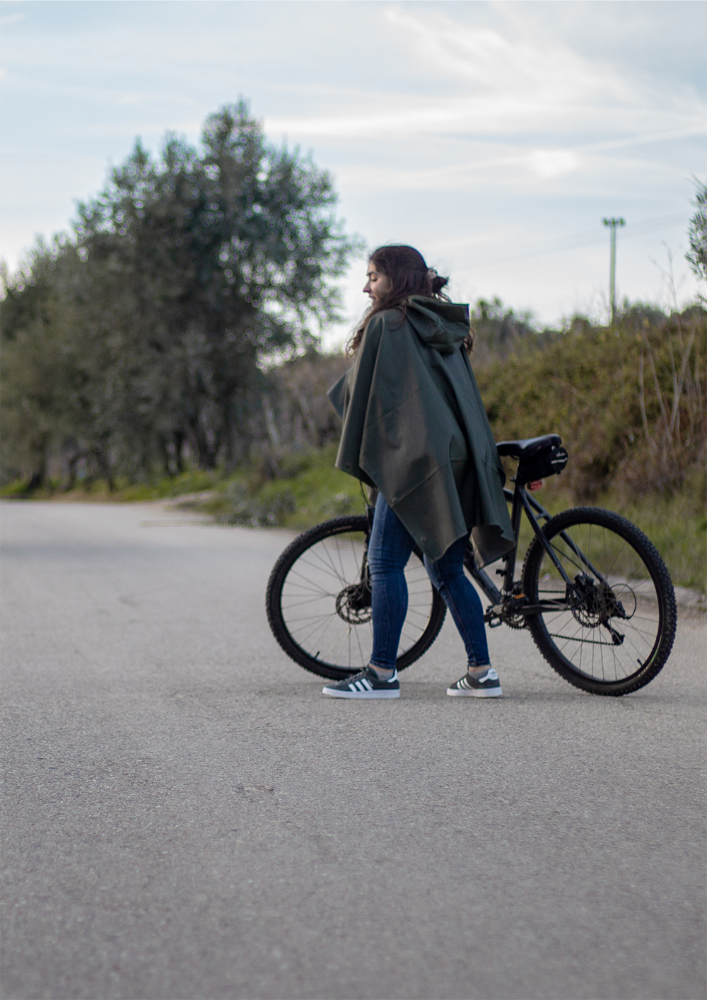

Pluvia
Sendo o intuito deste projeto a criação de um objeto que pudesse ser comercializado na loja da UA, começámos por estudar o contexto da Academia e da cidade de Aveiro. Observámos que cada vez mais é promovida a utilização da bicicleta como principal meio de transporte, mentalidade esta que já faz parte do pensamento Aveirense. Nesse sentido, observámos que um dos maiores problemas dos utilizadores da bicicleta eram os dias de chuva e vento, tão característicos de Aveiro, nos quais os utilizadores acabavam por escolher outros meios de transporte. Assim sendo, foi desenvolvido o impermeável pluvia. Este é adaptado à sua utilização no dia a dia, bem como na bicicleta. O facto de poder ser extensível dos lados permite a desintegração das mangas, tornando o impermeável numa capa protetora que pode ser usado em cima da bicicleta.